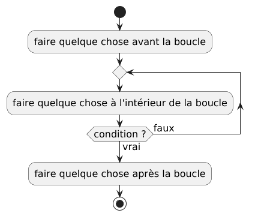
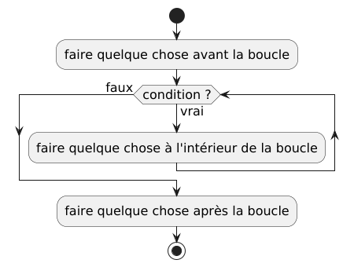
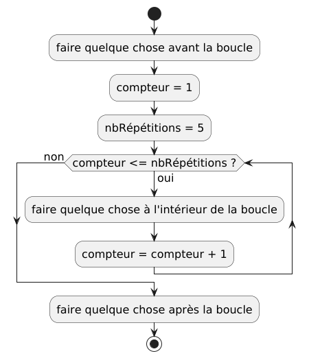
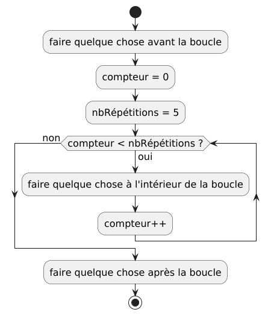

Les boucles¶
Boucles sans compteurs¶
Les boucles sans compteurs sont basées seulement sur une condition, et ne comptent pas le nombre de fois que la boucle est répétée. Pas opposition, les boucles avec compteurs comptent le nombre de répétitions de la boucle, et la décision de répéter la boucle ou non est basée sur le nombre de répétitions conservé dans le compteur.
Boucle répéter ... jusqu'à¶
En anglais : repeat ... until.
On place une conditionnelle à la fin de ce qui doit être répété (à la fin de
la boucle). La boucle arrête quand la condition du jusqu'à est vraie, et
la boucle continue si la condition est fausse.
Donc le retour arrière vers le début de la boucle s’effectue quand la condition est fausse. Quand la condition est vraie, on sort de la boucle.

PlantUML code
// faire quelque chose avant la boucle
répéter
// faire quelque chose à l'intérieur de la boucle
jusqu'à condition
// faire quelque chose après la boucle
Boucle faire ... tant que¶
En anglais : do ... while.
On place une conditionnelle à la fin de ce qui doit être répété (à la fin de
la boucle). La boucle arrête quand la condition du while est fausse, et
la boucle continue si la condition est vraie.
Donc le retour arrière vers le début de la boucle s’effectue quand la condition est vraie. Quand la condition est fausse, on sort de la boucle.
PlantUML code
// faire quelque chose avant la boucle
faire
// faire quelque chose à l'intérieur de la boucle
tantque condition
// faire quelque chose après la boucle
Boucle tant que¶
En anglais : while.
La boucle tant que est différente des 2 autres parce que la condition est
placée au début de la boucle, et par conséquent, la condition de boucle est
évaluée avant de faire quoi que se soit dans le corps la boucle. Le corps
d’une boucle tant que peut ne jamais être exécutée, mais le corps des
boucles faire ... tant que et répéter ... jusqu'à sont toujours exécutés au
moins une fois.
Mais comme la boucle faire ... tant que, la boucle continue si la condition
est vraie et arrête lorsque la condition est fausse. La différence est
qu’à la fin du corps de la boucle, on retournera automatiquement au début
pour évaluer la condition à nouveau et alors, on décidera si on continue
ou non. Sinon, on doit sauter à la première instruction après la boucle.

PlantUML code
// faire quelque chose avant la boucle
tantque condition :
// faire quelque chose à l'intérieur de la boucle
fintantque
// faire quelque chose après la boucle
Boucles avec compteurs¶
On ajoute une variable, le compteur, qui commence avec la valeur 0 ou 1, et
la condition de la boucle est basée sur ce compteur. Le compteur est souvent
nommé i ou j ou k …, comme dans la notation mathématique pour les
sommations :
On utilise souvent aussi les variables
avec des noms plus précis, comme par exemple nbEssais (nTries) ou
compteur (count).
Il n’y a pas de notation spéciale pour ce type de boucle dans les diagrammes,
mais en pseudocode et dans la plupart des langages de programmation, il y a
différentes formes de boucles pour (for).
Dans les diagrammes, on utilise normalement des boucles tant que, et dans
le pseudocode et dans les différents langages de programmation, on peut
aussi utiliser les boucles tant que, mais on utilisera normalement les
boucles pour lorsque possible. Les boucles pour sont, dans la plupart
des langages, une forme compacte des boucles tant que avec compteurs.

PlantUML code
@startuml
skinparam defaultFontSize 16
start
:faire quelque chose avant la boucle;
:compteur = 1;
:nbRépétitions = 5;
while (compteur <= nbRépétitions ?) is (oui)
:faire quelque chose à l'intérieur de la boucle;
:compteur = compteur + 1;
endwhile (non)
:faire quelque chose après la boucle;
stop
@enduml
Dans la plupart des langages de programmation, il existe un opérateur spécial
pour incrémenter un entier, ce qui signifie qu’il va ajouter 1 à la valeur
actuelle d’un nombre entier. Écrire compteur++ est équivalent à
écrire compteur = compteur + 1. Il est également possible de commencer
avec count = 0 au lieu de commencer avec 1. Pour faire le même nombre
d’itérations à travers la boucle, nous devons changer la condition de la boucle
pour utiliser < au lieu de <=.

PlantUML code
Pseudocode avec boucle tant que¶
// faire quelque chose avant la boucle
compteur = 1
nbRépétitions = 5
tantque compteur <= nbRépétitions :
// faire quelque chose à l'intérieur de la boucle
compteur = compteur + 1
fintantque
// faire quelque chose après la boucle
// faire quelque chose avant la boucle
compteur = 0
nbRépétitions = 5
tantque compteur < nbRépétitions :
// faire quelque chose à l'intérieur de la boucle
compteur++
fintantque
// faire quelque chose après la boucle
Pseudocode avec boucle pour¶
Boucle pour de style Algol¶
// faire quelque chose avant la boucle
nbRépétitions = 5
pour compteur de 0 à nbRépétitions :
// faire quelque chose à l'intérieur de la boucle
finpour
// faire quelque chose après la boucle
- La valeur de départ du compteur est 0.
- Il va y avoir une répétition (ou itération) de la boucle pour chaque
valeur de 0 jusqu’à
nbRépétitions.- selon le langage de programmation utilisé, l’intervalle de valeurs peut
être inclusif ou exclusif par rapport à la limite supérieure :
- si inclusif, alors le nombre d’itérations dans la boucle donnée plus
haut sera 6 parce qu’il y aura une itération pour toutes les valeurs
entières de 0 à 5 inclusivement
- dans ce cas, il serait probablement préférable d’initialiser le compteur à 1 au lieu de 0.
- si exclusif, alors le nombre d’itérations dans la boucle donnée plus
haut sera 5 parce que la boucle s’arrêtera lorsque
compteur == 5, donc il aura seulement des itérations pour les valeurs decompteurde 0, 1, 2, 3, et 4.
- si inclusif, alors le nombre d’itérations dans la boucle donnée plus
haut sera 6 parce qu’il y aura une itération pour toutes les valeurs
entières de 0 à 5 inclusivement
- La limite inférieure (la valeur de départ) est toujours inclusive.
- Nous utiliserons la convention que l’intervalle est exclusif, comme dans le langage de programmation Python.
- selon le langage de programmation utilisé, l’intervalle de valeurs peut
être inclusif ou exclusif par rapport à la limite supérieure :
Boucle pour de style C¶
// faire quelque chose avant la boucle
nbRépétitions = 5
pour (compteur = 0; compteur < nbRépétitions; compteur++) :
// faire quelque chose à l'intérieur de la boucle
finpour
// faire quelque chose après la boucle
compteur = 0: s’exécute une seule fois, juste avant l’évaluation de la condition de la bouclecompteur < nbRépétitions: la condition s’exécute à répétition (ou pour chaque itération) de la boucle, avant le corps de la boucle- comme pour une boucle
tant que, si la condition est vraie, alors le corps de la boucle est exécutée - sinon (si la condition est fausse), alors la boucle est terminée et l’exécution continue avec les instructions suivant la boucle
- comme pour une boucle
nbRépétitions++: mise à jour du compteur, qui s’exécute à la fin du corps de la boucle, juste avant de revenir au début de la boucle pour réévaluer la condition
Boucles pour chaque¶
En anglais : for each.
Les boucles pour chaque sont différentes des autres boucles parce qu’elles
nécessitent normalement l’utilisation de collections de valeurs ou d’objets, et
d’itérateurs. Les collections, comme les tableaux et les listes, contiennent
plusieurs valeurs ou objets, et les itérateurs permettent de parcourir toutes
les valeurs ou objets d’une collection sous forme de séquence.
Les collections, les itérateurs et les boucles pour chaque seront présentés de
façon plus détaillée plus tard. Pour l’instant, seulement une idée générale du
concept est présentée. Il est difficile de bien représenter les
boucles pour chaque dans des diagrammes, donc les exemples seront uniquement
sous forme de pseudocode.
Boucle pour chaque avec intervalle¶
// faire quelque chose avant la boucle
nbRépétitions = 5
pour chaque i dans intervalle(0, nbRépétitions) :
// faire quelque chose à l'intérieur de la boucle
finpour
// faire quelque chose après la boucle
- La fonction
intervalle(0, nbRépétitions)va créer une liste de nombres entiers dans l’intervalle[0, nbRépétitions):- les crochets
[et]veulent dire inclusif - les parenthèses
(et)veulent dire exclusif - donc les nombres dans la liste vont être 0, 1, 2, 3 et 4.
- les crochets
- À la première itération,
iva être 0 - À la deuxième itération,
iva être 1 - À la troisième itération,
iva être 2 - À la quatrième itération,
iva être 3 - À la cinquième et dernière itération,
iva être 4
Boucle pour chaque avec liste ou tableau¶
// faire quelque chose avant la boucle
nombres = [5, 1, 8, 3]
pour chaque i dans nombres :
// faire quelque chose à l'intérieur de la boucle
finpour
// faire quelque chose après la boucle
- À la première itération,
iva être 5 - À la deuxième itération,
iva être 1 - À la troisième itération,
iva être 8 - À la quatrième et dernière itération,
iva être 3